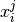

User guide¶
This user guide contains information about getting started with pyAnno, running simulations and running model estimation.
pyAnno can be used as a Python library from within your Python code, or as a standalone application by executing the pyAnno GUI.
Using the library from a Python shell¶
General organization of pyAnno¶
The pyAnno library is composed of several modules:
- pyanno.models defines a number of models for the annotation process
- pyanno.annotations offers a AnnotationsContainer object to load annotation files
- pyanno.measures contains a number of statistical functions to measure aggreement and covariance between annotators
- pyanno.plots defines functions to give a graphical representations of annotations and model parameters
- pyanno.database defines a PyannoDatabase object that can be used to store and retrieve the result of applying models to annotations
- pyanno.ui contains the definition of the pyAnno GUI, which is used by the pyAnno application and is typically not used directly from Python
Annotations¶
In pyAnno, annotations are two-dimensional arrays of integers. Rows
correspond to data items, and columns to annotators. Each entry 
in an annotation array is the label class assigned by annotator  to
item
to
item  , or pyanno.util.MISSING_VALUE for missing values.
, or pyanno.util.MISSING_VALUE for missing values.
[how to build annotation arrays from raw data]
Creating a new model¶
Annotations: missing values have to be indicated as pyanno.util.MISSING_VALUE (which evaluates to -1).
Generating data¶
Estimating parameters¶
Plots¶
Finding help¶
- Online API: [REF]
- Another way to see how the functions are intended to work is to have a look at the unit tests, which can be found in the directory pyannotests of the pyanno library
- If everything else fails, please describe your issue in pyAnno’s issue tracker.